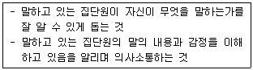
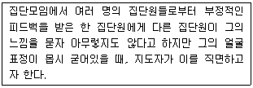
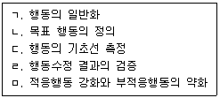
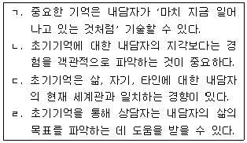
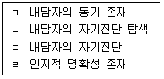
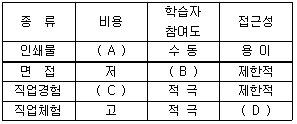
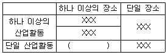
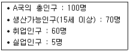
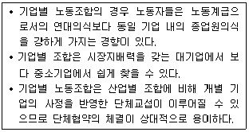
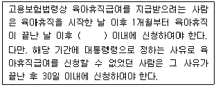

직업상담사-2급 (2014-05-25 기출문제)
1과목: 직업상담학
1. Ginzberg가 구분한 진로선택 과정 중 현실기의 하위단계가 아닌 것은?
- 탐색단계
- 구체화단계
- 전환단계
- 정교화단계
(정답률: 70%)

2. 다음 설명에 해당하는 집단상담 기법은?

- 해석하기
- 연결짓기
- 반영하기
- 명료화하기
(정답률: 60%)
3. 특성-요인 상담의 특징으로 틀린 것은?
- 상담자 중심의 상담방법이다.
- 문제의 객관적 이해보다는 내담자에 대한 정서적 이해에 중점을 둔다.
- 내담자에게 정보를 제공하고 학습기술과 사회적 적응 기술을 알려 주는 것을 중요시 한다.
- 사례연구를 상담의 중요한 자료로 삼는다.
(정답률: 72%)
4. 내담자의 종결 준비도를 알아볼 수 있는 것으로 적합하지 않은 것은?
- 적응능력이 증진되었는가?
- 호소문제나 증상이 줄어들었거나 제거되었는가?
- 다른 사람과 관계를 맺는 수준이 증진되었는가?
- 자신의 감정을 상담자에게 개방할 준비가 되었는가?
(정답률: 86%)
5. Williamson의 직업문제 분류범주에 포함되지 않는 것은?
- 진로 무선택
- 흥미와 적성의 차이
- 진로선택에 대한 불안
- 진로선택 불확실
(정답률: 66%)
6. 교류분석적 상담에서 피부접촉, 표정, 태도, 감정, 언어, 기타 여러 형태의 행동을 통해 상대방에 대한 반응을 알리는 인간인식의 기본 단위는?
- 스트로크(Stroke）
- 교류(Transaction）
- 각본(Script)
- 라켓(Racket)
(정답률: 76%)
7. 다음 사례에서 직면기법에 가장 가까운 반응은?

- “O O씨, 지금 느낌이 어떤가요?”
- “O O씨가 방금 아무렇지도 않다고 하는 말이 어쩐지 믿기지 않는군요.”
- “O O씨, 내가 만일 O O씨처럼 그런 지적을 받았다면 기분이 몹시 언짢겠는데요.”
- “O O씨는 아무렇지도 않다고 말하지만, 지금 얼굴이 아주 굳어있고 목소리가 떨리는군요. 내적으로 지금 어떤 불편한 감정이 있는 것 같은데, O O씨의 반응이 궁금하군요”
(정답률: 88%)
8. 상담 중기과정의 활동에 대한 설명으로 틀린 것은?
- 내담자에게 직면시키고 도전한다.
- 내담자가 가진 문제의 심각도를 평가한다.
- 내담자가 실천할 수 있도록 동기를 조성한다.
- 문제에 대한 대안을 현실 생활에 적응하고 실천하도록 돕는다.
(정답률: 69%)
9. 성공적인 상담결과를 위한 내담자 목표의 특징이 아닌 것은?
- 변화될 수 없으며 구체적이어야 한다.
- 실현가능한 것이어야 한다.
- 내담자가 원하고 바라는 것이어야 한다.
- 상담자의 기술과 양립 가능해야만 한다.
(정답률: 85%)
10. 경력 상담시 내담자의 가족이나 선조들의 직업 특징에 대한 시각적 표상을 얻기 위해 도표를 만드는 방식은?
- 경력개발프로그램
- 제노그램
- 경력사다리
- 칸트도표
(정답률: 91%)
11. 생애진로사정의 구조 중 전형적인 하루에서 검토되어야 할 성격차원은?
- 의존적 – 독립적 성격차원
- 판단적 – 인식적 성격차원
- 외향적 – 내성적 성격차원
- 감각적 – 직관적 성격차원
(정답률: 88%)
12. 정신역동상담의 주요 기술이 아닌 것은?
- 전이
- 훈습
- 해석
- 선택
(정답률: 69%)
13. 행동수정 프로그램의 절차를 바르게 나열한 것은?

- ㄴ→ㄷ→ㅁ→ㄹ→ㄱ
- ㄴ→ㄹ→ㄷ→ㅁ→ㄱ
- ㄷ→ㄱ→ㄹ→ㅁ→ㄴ
- ㄷ→ㅁ→ㄹ→ㄴ→ㄱ
(정답률: 80%)
14. 비밀보장 예외의 원칙과 가장 거리가 먼 것은?
- 상담자가 슈퍼비전을 받아야 하는 경우
- 심각한 범죄 실행의 가능성이 있는 경우
- 내담자가 자살을 실행할 가능성이 있는 경우
- 청소년 내담자를 의뢰한 교사가 요청하는 경우
(정답률: 77%)
15. Adler 이론의 주요 개념인 초기 기억에 관한 설명으로 모두 고른 것은?

- ㄱ, ㄴ
- ㄴ, ㄷ
- ㄱ, ㄷ, ㄹ
- ㄴ, ㄷ, ㄹ
(정답률: 70%)
16. 상담과정에 관한 설명으로 틀린 것은?
- 라포(Rapport) 형성 : 상담자와 내담자가 신뢰관계를 형성하는 단계이다.
- 명료화 : 문제 자체가 무엇이며 누가 상담의 대상인가를 분명하게 밝히는 단계이다.
- 구조화 : 상담목표를 위해 제시된 대안이나 대체될 행동들을 실체로 적용해 나가는 단계이다.
- 탐색 : 문제 해결에 도움이 될 수 있는 방법과 절차를 결정하는 단계이다.
(정답률: 75%)
17. 직업상담에서 이루어지는 일반적인 상담과정의 사정단계를 바르게 나열한 것은?

- ㄷ→ㄱ→ㄴ→ㄹ
- ㄷ→ㄴ→ㄹ→ㄱ
- ㄹ→ㄷ→ㄱ→ㄴ
- ㄹ→ㄱ→ㄷ→ㄴ
(정답률: 69%)
18. 개인주의 상담의 상담기법이 아닌 것은?
- 격려하기
- 초인종 누르기
- 반대행동하기
- 타인을 즐겁게 하기
(정답률: 61%)
19. 직업상담의 기법 중 비지시적 상담 규칙이 아닌 것은?
- 상담자는 내담자와 논쟁해서는 안 된다.
- 상담자는 내담자에게 질문 또는 이야기를 해서는 안 된다.
- 상담자는 내담자에게 어떤 종류의 권위도 과시해서는 안 된다.
- 상담자는 인내심을 가지고 우호적으로, 그러나 지적으로는 비판적인 태도로 내담자의 말을 경청해야 한다.
(정답률: 81%)
20. 형태주의적 상담과 관련된 성격이론에서 신념, 행동양식, 감정 및 평가의 무비판적인 수용은?
- 융합
- 내사
- 투사
- 편향
(정답률: 67%)
2과목: 직업심리학
21. 직업전환을 원하는 내담자를 상담할 때 일차적으로 고려해야 할 사항과 가장 거리가 먼 것은?
- 나이와 건강을 고려해야 한다.
- 부모의 기대와 아동기 경험을 분석한다.
- 직업을 전환하는 데 동기화가 되어 있는지 알아본다.
- 직업을 바꾸는 데 필요한 기술을 가지고 있는지 평가해야 한다.
(정답률: 79%)
22. Lofquis와 Dawis의 직업적응이론에서 성격양식 차원에 관한 설명으로 틀린 것은?
- 민첩성 – 정확성 보다는 속도를 중시한다.
- 역량 – 근로자의 평균 활동수준을 의미한다.
- 리듬 – 활동에 대한 단일성을 의미한다.
- 지구력 – 다양한 활동수준의 기간을 의미한다.
(정답률: 81%)
23. 조직에서의 스트레스를 매개하거나 조절하는 요인들 중 개인속성이 아닌 것은?
- Type A형과 같은 성격 유형
- 친구나 부모와 같은 주변인의 사회적 지지정도
- 상황을 개인이 통제할 수 있느냐에 대한 신념
- 부정적인 사건들에서 빨리 벗어나는 능력
(정답률: 77%)
24. 심리검사의 윤리적 문제와 관계없는 것은?
- 심리검사의 목적과 절차를 충분히 설명해야 한다.
- 심리검사나 평가기법을 개발하고 표준화 할 때에는 과학적 과정을 따라야 한다.
- 평가된 검사는 평가기관의 사용목적에 따라 자유롭게 사용해야 한다.
- 적절한 훈련을 받지 않은 사람은 심리검사를 자유롭게 이용해서는 안 된다.
(정답률: 68%)
25. 솔직하고, 성실하며, 말이 적고, 고집이 세면서 직선적인 사람들은 Holland의 어떤 작업환경에 잘 어울리는가?
- 탐구적
- 예술적
- 현실적
- 관습적
(정답률: 65%)
26. 고용노동부에서 실시하는 일반직업적성검사가 측정하는 영역이 아닌 것은?
- 형태지각력
- 공간판단력
- 상황판단력
- 언어능력
(정답률: 69%)
27. Selye가 주장한 일반적응증후군（Gneral Adaptation Syndrome）의 3가지 단계가 아닌 것은?
- 경계단계
- 도피단계
- 저항단계
- 탈진단계
(정답률: 83%)
28. 직무분석 대상에 대한 전문가 집단의 자유로운 토의를 통해 직무분석을 하는 방법은?
- 데이컴법
- 비교확인법
- 브레인스토밍법
- 최초확인법
(정답률: 65%)
29. 인지적 정보처리의 주요 전제가 아닌 것은?
- 진로선택은 인지적 및 정의적 과정들의 상호작용의 결과이다.
- 진로를 선택한다는 것은 하나의 문제해결 활동이다.
- 진로성숙은 진로문제를 해결할 수 있는 자신의 능력에 의존하지 않는다.
- 진로문제 해결은 고도의 기억력을 요하는 과제이다.
(정답률: 64%)
30. 스트레스의 예방 및 대처방안으로 틀린 것은?
- 가치관을 전환시켜야 한다.
- 과정중심적 사고방식에서 목표지향적 초고속심리로 전환해야 한다.
- 균형있는 생활을 해야 한다.
- 취미, 오락을 통해 생활장면을 전환하는 활동을 규칙적으로 해야 한다.
(정답률: 83%)
31. 타당도 중에서 수치(예 : 타당도 계수)로 나타낼 수 있는 것은?
- 예언타당도
- 내용타당도
- 구성타당도
- 안면타당도
(정답률: 49%)
32. 직무분석의 용도가 아닌 것은?
- 모집과 선발
- 교육 및 훈련
- 직무의 상대적 가치결정
- 인사고과
(정답률: 50%)
33. 기초통계치 중 명명척도로 측정된 자료에서는 파악할 수 없고 서열척도 이상의 척도로 측정된 자료에서만 파악할 수 있는 것은?
- 중앙치
- 최빈치
- 표준편차
- 평균
(정답률: 56%)
34. 다음 중 실업자를 위한 실업관련 프로그램과 가장 거리가 먼 것은?
- 직업전환 프로그램
- 인사고과 프로그램
- 실업충격 완화 프로그램
- 직업복귀 훈련 프로그램
(정답률: 82%)
35. 진로선택에 관한 사회학습이론에서 개인의 진로발달 과정과 관련이 없는 요인은?
- 유전요인과 특별한 능력
- 환경조건과 사건
- 과제접근 기술
- 인간관계 기술
(정답률: 71%)
36. Super의 직업발달 5단계를 바르게 나열한 것은?
- 성장기→유지기→탐색기→확립기→쇠퇴기
- 성장기→탐색기→확립기→유지기→쇠퇴기
- 성장기→탐색기→유지기→확립기→쇠퇴기
- 성장기→확립기→유지기→탐색기→쇠퇴기
(정답률: 83%)
37. 직무만족에 대한 2요인이론의 설명으로 틀린 것은?
- 낮은 수준의 욕구를 만족하지 못하면 직무불만족이 생긴다.
- 자아실현의 실패로 직무불만족이 생기는 것은 아니다.
- 동기요인은 높은 수준의 성과를 얻도록 자극하는 요인이다.
- 위생요인은 직무만족과 관련된 직접적인 요인이다.
(정답률: 64%)
38. Holland의 모형에서 “어떤 쌍들은 다른 유형의 쌍들보다 공통점을 더 많이 가지고 있다”는 것을 나타내는 것은?
- 정체성
- 일관성
- 차별성
- 일치성
(정답률: 51%)
39. 일반적으로 가장 높은 신뢰도 계수를 기대할 수 있는 것은?
- 표준화된 성취검사
- 표준화된 지능검사
- 직무수행 평가도구
- 투사법 성격검사
(정답률: 68%)
40. 일반적성검사(GATB)에 관한 설명으로 가장 적합한 것은?
- 2~3개 적성분야를 조합해서 15개의 직무군을 제공한다.
- 현재 국내의 GATB는 미국의 것을 토대로 했으며 타당화가 잘 되어 있다.
- 하위검사에 지필검사는 포함되어 있지 않다.
- 15개의 지필검사로 이루어져 있다.
(정답률: 45%)
3과목: 직업정보론
41. 다음 중 적극적인 노동시장 정책으로 볼 수 없는 것은?
- 실업급여 제공
- 실직자 취업상담
- 실직자 재취직훈련
- 일자리 창출
(정답률: 76%)
42. 한국표준산업분류(2008)에서 분류의 범위에 대한 설명으로 사실과 다른 것은?
- 한국표준산업분류는 산업활동의 유형에 따른 분류이므로 이 분류의 범위는 국민계정(SNA)에서 정의된 것처럼 경제활동에 종사하고 있는 단위에 대한 분류로 국한하고 있다.
- 한국표준산업분류 9차 개정안은 국민계정의 생산영역에 의해서 정해진 범위와 정확히 일치한다.
- 982를 KSIC에 포함시킨 것은 ISIC처럼 가구의 생계활동을 측정하기 위한 중요한 틀이 되기 때문이다.
- 982는 일반적으로 사업체 조사에서 이용되지 않는다.
(정답률: 54%)
43. 국가기술자격의 기사 응시자격으로 가정 거리가 먼 것은?
- 산업기사 등급 이상의 자격을 취득한 후 응시하려는 종목이 속하는 동일 및 유사 직무분야에서 1년 이상 실무에 종사한 사람
- 기능사 자격을 취득한 후 응시하려는 종목이 속하는 동일 및 유사 직무분야에서 3년 이상 실무에 종사한 사람
- 2년제 전문대학 관련학과 졸업자 등으로서 졸업 후 응시하려는 종목이 속하는 동일 및 유사직무분야에서 1년 이상 실무에 종사한 사람
- 응시하려는 종목이 속하는 동일 및 유사 직무분야에서 4년 이상 실무에 종사한 사람
(정답률: 53%)
44. 워크넷에서 제공하는 직업선호도검사 L형과 S형의 공통적인 하위검사는?
- 흥미검사
- 성격검사
- 생활사검사
- 구직동기검사
(정답률: 77%)
45. 직업능력개발계좌제에 대한 설명으로 옳은 것은?(관련 규정 개정전 문제로 여기서는 기존 정답인 2번을 누르면 정답 처리됩니다. 자세한 내용은 해설을 참고하세요.)
- 미용 직종은 지방노동관서의 팀장, 담당자 2명이 합의한 경우에 계좌를 발급할 수 있다.
- ‘취업성공패키지 지원사업’ 참여자의 계좌 지원한도는 300만원이다.
- 고용노동부장관은 실업자 등이 질병 등 불가피한 사유 없이 계좌적합훈련과정을 수려하지 않거나 수강포기 또는 제적된 경우에 계좌 지원한도에서 30만원을 차감한다.
- 계좌의 유효기간은 계좌발급일부터 6개월이다.
(정답률: 72%)
46. ‘시장조사분석가’에 대한 설명으로 가장 거리가 먼 것은?
- 충분한 양의 제품생산에서 고객만족을 중시하는 경영체계로 기업경영이 바뀌면서 중요해지는 직업이다.
- 정확한 판단력이 필요하여 통계적 기법보다는 언어적 기법을 사용한다.
- 설문서 작성, 표본추출방법, 보고서의 양식 등은 조사 이전에 명기하여야 하는 업무가 있다.
- 연령 · 자격 등에 제한이 없으나, 일반적으로 전문적인 지식이 요구된다.
(정답률: 71%)
47. 다음 중 한국표준직업분류상 직업에 속하는 활동은?
- 이자, 주식배당, 임대료, 조작료, 권리금 등과 같은 재산 수입을 얻는 활동
- 의무복무 중이 아닌 장교
- 자기 집에서 하는 가사 활동
- 정규 주간 교육기관에 재학하고 있는 학습 활동
(정답률: 77%)
48. 한국표준산업분류(2008)의 산업분류기준에 해당되지 않는 것은?
- 투입물의 특성
- 생산활동의 일반적인 결합형태
- 생산된 재화 또는 제공된 서비스의 특성
- 산업활동의 차별성
(정답률: 67%)
49. 고용동향관련 주요 개념으로 틀린 것은?(오류 신고가 접수된 문제입니다. 반드시 정답과 해설을 확인하시기 바랍니다.)
- 취업자라 함은 조사대상 기간 중 수입 있는 일에 한 시간 이상 종사한 자를 말한다.
- 경제활동인구라 함은 15세 이상 인구 중 취업자 또는 실업자를 말한다.
- 고용률은 경제활동인구를 15세 이상 인구로 나누어 계산한다.
- 실업자란 일할 능력과 의사를 갖고 있으면서 조사대상 기간 중 수입 있는 일에 전혀 종사하지 못한 자를 말한다.
(정답률: 64%)
50. 직무분석 방법 중 데이컴법(DACUM Method)에 관한 설명으로 틀린 것은?
- 교과과정을 개발하기 위해 주로 사용되는 기법이다.
- 해당 직업 전문가가 직무의 전반에 대하여 잘 알고 있음을 전재로 한다.
- 데이컴 위원회는 8~12명의 전문가로 구성된다.
- 데이컴 분석가(DACUM Facilitator)는 서기나 옵저버의 의견도 잘 반영하여야 한다.
(정답률: 66%)
51. 다음 중 ‘생활체육지도자’ 자격과 관련이 가장 낮은 것은?
- 질 높은 생활체육의 진흥을 목적으로 시행되고 있다.
- 체육활동 중에 부상이 발생하면 초기 응급치료도 담당한다.
- 공공체육시설, 사설체육시설, 직장, 학교 등에서 체육운영프로그램의 책임자로 일할 수 있다.
- 18세 이상이 되어야 가능하다.
(정답률: 65%)
52. 한국표준직업분류에서 직업에 대한 설명으로 가장 거리가 먼 것은?
- 유사성을 갖는 직무를 계속하여 수행하는 계속성을 가져야 한다.
- 노력이 전제되지 않는 자연발생적인 이득의 수취나 우연하게 발생하는 경제적인 과실에 전적으로 의존하는 활동은 직업으로 보지 않는다.
- 경제성은 비윤리적 영리행위나 반사회적인 활동을 통한 경제적인 이윤추구는 직업 활동으로 인정되지 못한다는 것이다.
- 직업 화동은 사회 공동체적인 맥락에서 의미 있는 활동 즉, 사회적인 기여를 전제조건으로 하고 있다.
(정답률: 50%)
53. 워크넷에서 제공하는 채용정보 중 기업형태별 검색에 해당하지 않는 것은?
- 대기업
- 공기업/공공기업
- 외국계기업
- 금융권기업
(정답률: 78%)
54. 공공직업정보와 비교하여 민간직업정보의 특성에 관한 설명으로 옳은 것은?
- 정보생산자의 임의적 기준이나 관심위주로 직업을 분류한다.
- 특정시기에 국한하지 않고 전체 산업 및 업종에 걸쳐진 직종을 대상으로 한다.
- 국내 또는 국제적으로 인정된 분류체계에 근거한다.
- 광범위한 이용가능성에 따라 직접적이고 객관적인 평가가 가능하다.
(정답률: 76%)
55. 다음 직업정보 유형별 특징에 관한 표의 ( )안에 들어갈 알맞은 것은?

- A – 고, B – 적극, C – 고, D – 용이
- A – 고, B – 수동, C – 저, D – 제한적
- A – 저, B – 적극, C – 고, D - 제한적
- A – 저, B – 수동, C – 저, D – 용이
(정답률: 79%)
56. 국가기술자격 검정의 방법으로 사실과 다른 것은?
- 기술사 – 단답형 필기시험 또는 주관식 논문형 필기시험, 구술형 면접
- 기능장 – 단답형 필기시험, 작업형 실기시험
- 기사 – 객관식 필기시험, 주관식 필기시험 또는 작업형 실기시험
- 산업기사 – 객관식 필기시험, 주관식 필기시험 또는 작업형 실기시험
(정답률: 61%)
57. 다음 중 국가자격시험의 시행기관이 다른 것은?
- 전산회계운용사
- 정보처리산업기사
- 국제의료관광코디네이터
- 사무자동화산업기사
(정답률: 52%)
58. 한국직업사전에는 각 직업별로 환경조건을 분석하여 제시한다. 다음의 직업명세 항목 가운데 작업환경에 해당하는 것은?
- 작업강도
- 손사용
- 위험내제
- 정밀작업
(정답률: 69%)
59. 한국표준산업분류(2008)의 통계단위는 생간활동과 장소의 동질성의 차이에 따라 다음과 같이 구분된다. ( )안에 들어갈 가장 알맞은 것은?

- 기업집단
- 지역단위
- 기업체 단위
- 활동유형단위
(정답률: 77%)
60. 직업정보의 처리에 대한 설명으로 가장 거리가 먼 것은?
- 직업정보는 전문가가 분석해야 한다.
- 직업정보는 제공시에는 이용자의 수준에 맞게 한다.
- 직업정보 수집시에는 명확한 목표를 세운다.
- 직업정보 제공시에는 직업의 장점만을 최대한 부각해서 제공한다.
(정답률: 80%)
4과목: 노동시장론
61. 실업-결원곡선(Beveridge Curve)에 관한 설명으로 틀린 것은?
- 종축에는 결원 수, 횡축에는 실업자 수를 표시한다.
- 원점에서 멀어질수록 구조적 실업자 수가 증가함을 의미한다.
- 마찰적 실업과 구조적 실업을 구분하는 것이 가능하다.
- 현재의 실업자 수에서 현재의 결원 수를 뺀 것이 수요부족실업자 수이다.
(정답률: 67%)
62. 사용자의 자유로운 채용이 허락되나 일단 채용된 후, 일정한 견습기간이 지나 정식 종업원이 되면 노동조합에 반드시 가입해야 하는 숍 제도는?
- 오픈 숍(Open Shop)
- 클로즈드 숍(Closed Shop)
- 유니언 숍(Union Shop)
- 에이전시 숍(Agency Shop)
(정답률: 75%)
63. 다음 중 기혼여성의 경제활동참가 증가요인이 아닌 것은?
- 시장임금의 상승
- 보상요구임금의 상승
- 남편 근로소득의 감소
- 파트타임 고용시장의 발달
(정답률: 67%)
64. 후방굴절형 노동공급곡선이 의미하는 것은?
- 최저생계비 이하에서는 임금 하락이 오히려 노동공급을 증가시킬 수 있다.
- 후방굴절 부분에서는 임금인상이 노동공급의 대체효과만으로 결정된다.
- 개인의 노동공급은 임금상승의 대체효과가 소득효과보다 클 때 증가한다.
- 경기회복 시에는 노동공급이 증가하고 경기후퇴 시에는 노동공급이 감소한다.
(정답률: 60%)
65. 완전경쟁기업의 단기 노동수요곡선은 다음 중 어느 곡선의 일부인가?
- 평균수입(AR) 곡선
- 한계수입(MR) 곡선
- 평균수입생산물(ARP) 곡선
- 한계생산물가치(VMP) 곡선
(정답률: 64%)
66. 생산물시장과 노동시장이 완전경쟁이고, A기업의 시간당 임금은 3,000원이다. A기업에서 생산된 제품의 가격은 500원이고, 현 고용수준에서 최종적으로 고용된 근로자가 생산하는 제품의 수는 시간당 5개라 할 때 A기업의 이윤극대화를 위한 고용수준의 결정은?
- 고용량을 감소시킬 것이다.
- 고용량을 증대시킬 것이다.
- 고용량을 현 수준에서 동결시킬 것이다.
- 기업의 이윤극대화는 고용량과는 관련이 없다.
(정답률: 55%)
67. 노동조합 조직 부문의 임금인상이 노조 비조직 부문에 미치는 효과에 대한 설명 중 틀린 것은?
- 파급효과는 노조 조직 부문에서 비조직 부문으로의 노동 이동을 유발하여 비조직 부문의 임금을 하락시키는 효과이다.
- 위협효과는 비조직 부문의 임금을 상승시키는 효과이다.
- 파급효과는 비조직 부문에서 노조 조직 부문으로 노동이동을 유발하여 조직 부문의 임금을 하락시키는 효과이다.
- 위협효과는 노조의 잠재적인 조직 위협에 직면한 비조직 부문 사용자로 하여금 임금을 인상하게 하는 효과이다.
(정답률: 65%)
68. 아래 자료에서 A국의 실업률 계산공식으로 맞는 것은?

- 5/100 × 100
- 5/70 × 100
- 5/60 × 100
- 5/65 × 100
(정답률: 67%)
69. 임금형태에 관한 설명 중 잘못된 것은?
- 임금형태는 경영이 안정 지향적이냐 혹은 성과 지향적이냐에 따라 고정급과 성과급으로 구분된다.
- 성과급은 노동능률이나 업적을 지급기준으로 하는 임금제도로 능률급 혹은 업적급이라 한다.
- 일반적으로 성과급의 도입은 제품의 질을 향상 시켜 품질관리에 필요한 비용을 절감시킨다.
- 성과를 측정하는 도구로서는 생산량, 생산액, 이윤액, 원가절감액 등이 있다.
(정답률: 64%)
70. 실업률과 물가상승률 간 역의 상관관계를 나타내는 곡선은?
- 래퍼 곡선
- 필립스 곡선
- 로렌스 곡선
- 테일러 곡선
(정답률: 79%)
71. 우리나라 노동조합의 주된 조직형태는?
- 직업별 노동조합
- 산업별 노동조합
- 일반 노동조합
- 기업별 노동조합
(정답률: 65%)
72. 고정급제 임금형태가 아닌 것은?
- 시급제
- 연봉제
- 성과급제
- 일당제
(정답률: 79%)
73. 기업별 노동조합에 대한 설명으로 맞는 것은 모두 몇 개 인가?

- 0 개
- 1 개
- 2 개
- 3 개
(정답률: 65%)
74. 임금격차의 원인으로서 통계적 차별(Statistical Discrimination)이 일어나는 경우는?
- 비숙련 외국인노동자에게 낮은 임금을 설정할 때
- 임금이 개별 노동자의 한계생산성에 근거하여 설정될 때
- 사용자가 자신의 경험을 기준으로 근로자의 임금을 결정할 때
- 사용자가 근로자의 생산성에 대해 불완전한 정보를 갖고 있어 평균적인 인식을 근거로 임금을 결정할 때
(정답률: 69%)
75. 노동수요곡선이 이동하는 이유가 아닌 것은?
- 임금수준의 변화
- 생산방법의 변화
- 자본의 자격변화
- 생산물에 대한 수요의 변화
(정답률: 64%)
76. 수요부족실업에 해당되는 것은?
- 마찰적 실업
- 구조적 실업
- 계절적 실업
- 경기적 실업
(정답률: 68%)
77. 경기침체에도 불구하고 실업률이 크게 높아지지 않았다면, 그 이유로 가장 적합한 것은?
- 부가노동자효과가 실망노동자효과보다 컸기 때문이다.
- 실망노동자효과가 부가노동자효과보다 컸기 때문이다.
- 실망노동자효과와 부가노동자효과의 크기가 비슷했기 때문이다.
- 실망노동자효과가 없었기 때문이다.
(정답률: 62%)
78. 실질임금의 정의로 옳은 것은?
- 한 가구의 총 임금을 말한다.
- 물가수준을 반영하여 구매력으로 평가한 임금을 말한다.
- 세금공제 후 노동자가 실제 지급받는 임금을 말한다.
- 작업시간과 작업의 난이도를 반영한 임금을 말한다.
(정답률: 60%)
79. 우리나라의 연령별, 성별 고용구조에 대한 설명으로 옳은 것은?
- 우리나라도 산업사회로 진입하면서 출산율이 둔화되고 노동력의 고령화 추세가 나타난다.
- 우리나라 청년층의 경제활동참가율은 선진국보다 높은 편이다.
- 여성의 경제활동참가율은 연령계층별로 살펴보면 20대 후반과 30대 초반 연령에서 경제활동 참가율이 크게 함몰된 M자형 곡선으로 나타난다. 이는 여성의 생애경력의 단절에 기인하므로 선진국에서도 동일하게 나타나는 현상이다.
- 우리나라 노년층의 경제활동 참가율은 사회보장제도가 잘 되어 있는 선진국보다 낮은 편이다.
(정답률: 60%)
80. 최저임금제 실시에 따른 효과로 볼 수 있는 것은?
- 고용 증가
- 노동력의 질적 하락
- 노동조합의 임금삭감 수용
- 기업 간 공정경쟁 확보 가능성
(정답률: 58%)
5과목: 노동관계법규
81. 고용정책기본법상 고용정책 기본계획에 직접적으로 포함되는 내용이 아닌 것은?
- 고용 동향과 인력의 수급 전망에 관한 사항
- 고용에 관한 국가 시책의 기본 방향이 되는 사항
- 지정직업훈련시설의 설치에 관한 사항
- 인력의 수요와 공급에 영향을 미치는 산업정책동향에 관한 사항
(정답률: 62%)
82. 고용정책기본법상 이 법에서 실현하고자 하는 목적을 달성하기 위하여 일정한 임무를 부여하고 있는 주체가 아닌 것은?
- 사업주
- 직업안정기관
- 국가
- 노동위원회
(정답률: 50%)
83. 헌법상 근로자의 노동3권에 해당하지 않는 것은?
- 단결권
- 단체교섭권
- 단체행동권
- 이익균점권
(정답률: 82%)
84. 남녀고용평등과 일 · 가정 양립 지원에 관한 법률상 명예고용평등감독관에 대한 내용으로 옳지 않은 것은?
- 법령위반 사실이 있는 사항에 대하여 사업주에 대한 개선 건의 및 감독기관에 대한 신고 업무를 수행한다.
- 해당 사업장의 차별 및 직장 내 성희롱 발생시 피해 근로자에 대한 상담 · 조언 업무를 수행한다.
- 명예고용평등감독관은 그 사업장 소속이 아닌자로 위촉한다.
- 사업주는 명예감독관으로서 정당한 임무 수행을 한 것을 이유로 해당 근로자에게 인사상 불이익 등의 불리한 조치를 하여서는 아니 된다.
(정답률: 74%)
85. 근로자직업능력개발법상 기능대학에 관한 설명으로 옳은 것은?
- 사립학교법에 따른 학교법인은 기능대학을 설립 · 경영할 수 없다.
- 지방자치단체가 기능대학을 설립 · 경영하려면 해당 지방자치단체의 장은 교육부장관과 협의를 한 후 고용노동부장의 인가를 받아야 한다.
- 국가가 기능대학을 설립 · 경영하려면 관계 중앙행정기관의 장은 교육부장관 및 고용노동부장관과 각각 협의하여야 한다.
- 기능대학은 그 특성을 고려하여 다른 명칭을 사용할 수 없다.
(정답률: 54%)
86. 직업안정법에 관한 설명으로 옳은 것은?
- 직업안정기관이란 직업소개, 직업지도 등 직업안정업무를 수행하는 지방고용심의회를 말한다.
- 직업소개사업을 하고자 하는 자는 유료 · 무료를 불문하고 모두 신고하여야 한다.
- 직업안정기관의 장은 구인자가 구인자가 구인조건의 명시를 거부하는 경우 구인신청의 수리를 거부하여서는 아니 된다.
- 파견근로자보호 등에 관한 법률에 따른 근로자 파견사업은 근로자공급사업에서 제외된다.
(정답률: 60%)
87. 근로자직업능력개발법상 직업능력개발훈련에 관한 설명으로 옳은 것은?(문제 오류로 가답안 발표시 2번으로 정답이 발표되었으나, 확정답안 발표시 2, 3번이 정답 처리 되었습니다. 여기서는 2번을 누르면 정답 처리 됩니다.)
- 직업능력개발훈련은 18세 미만인 자에게는 실시할 수 없다.
- 직업능력개발훈련의 대상에는 취업할 의사가 있는 사람뿐만 아니라 사업주에게 고용된 사람도 포함된다.
- 고용노동부장관은 직업능력개발훈련의 상호호환·인정·교류가 가능하도록 직업능력개발훈련과 관련된 기술·자원·운영 등에 관한 표준을 정할 수 있다.
- 직업능력개발훈련을 받는 훈련생이 훈련중에 그 훈련으로 인하여 재해를 입은 경우에는 보상을 받을 수 없다.
(정답률: 77%)
88. 근로기준법상 평균임금으로 산정하지 않는 것은?
- 퇴직금
- 휴업수당
- 휴업보상
- 해고예고수당
(정답률: 50%)
89. 근로자직업능력개발법상 직업능력법령상 직업능력개발훈련시설을 설치할 수 있는 공공단체의 범위에 해당하지 않는 것은?
- 한국산업인력공단
- 한국장애인고용공단
- 대한상공회의소
- 근로복지공단
(정답률: 76%)
90. 직업안정법상 구인 · 구직의 신청에 관한 설명으로 옳은 것은?
- 국외 취업희망자의 구직신청의 유효기간은 1년으로 한다.
- 직업안정기관의 장은 관할구역의 읍 · 면 · 동사무소에 구인신청서와 구직신청서를 갖추어 두어 구인자 · 구직자의 편의를 도모하여야 한다.
- 직업안정기관의 장은 접수된 구인표 · 구직표를 3년간 관리 · 보관하여야 한다.
- 수리된 구인신청서의 유효기관은 3개월이다.
(정답률: 66%)
91. 남녀고용평등과 일 · 가정 양립 지원에 관한 법률상 직장 내 성희롱 또는 고객 등에 의한 성희롱과 관련된 사업주의 조치로 옳지 않은 것은?
- 직장 내 성희롱 행위자에 대한 징계조치
- 직장 내 성희롱 피해를 입거나 피해 발생을 주장하는 근로자에 대한 해고의 금지
- 고객 등에 의한 성희롱으로 인한 고충 해소를 요청한 근로자에 대한 배치전환
- 고객 등에 의한 성희롱으로 인한 고충 해소를 요청한 근로자에 대한 해고
(정답률: 74%)
92. 근로기준법상 경영상 이유로 의한 해고의 제한에 관한 설명으로 틀린 것은?
- 사용자가 경영상 이유로 의하여 근로자를 해고하려면 긴박한 경영상의 필요가 있어야 한다.
- 사용자는 합리적이고 공정한 해고의 기준을 정하고 이에 따라 그 대상자를 선정하여야 한다.
- 사용자는 해고를 피하기 위한 방법과 해고의 기준 등에 관하여 해고 대상자에게 해고를 하려는 날의 50일 전까지 통보하고 성실하게 협의하여야 한다.
- 사용자는 대통령령으로 정하는 일정한 규모 이상의 인원을 해고하려면 대통령령으로 정하는 바에 따라 고용노동부장관에게 신고하여야 한다.
(정답률: 63%)
93. 고용보험법상 실업급여에 관한 처분에 대한 심사 및 재심사의 청구에 관한 설명으로 틀린 것은?
- 심사의 청구는 확인 또는 처분이 있음을 안 날부터 90일 이내에 제기하여야 한다.
- 심사 및 재심사의 청구는 시효중단에 관하여 재판상의 청구로 본다.
- 심사관에 대한 기피신청은 그 사유를 구체적으로 밝힌 서면으로 하여야 한다.
- 심사청구인 법정대리인 외에 청구인의 배우자는 대리인으로 선임할 수 없다.
(정답률: 66%)
94. 근로기준법에 명시된 휴일 또는 휴가로 볼 수 없는 것은?
- 주휴일
- 출산휴가
- 근로자의 날
- 연차휴가
(정답률: 63%)
95. 고용상 연령차별금지 및 고령자고용촉진에 관한 법률에 관한 설명으로 틀린 것은?
- 고령자는 55세 이상인 사람이다.
- 준고령자는 50세 이상 55세 미만인 사람이다.
- 제조업의 고령자 기준고용율은 그 사업장의 사시근로자 수의 100분의 3이다.
- 운수업의 고령자 기준고용율은 그 사업장의 상시근로자 수의 100분의 6이다.
(정답률: 78%)
96. 다음 ( )에 알맞은 것은?

- 1개월
- 3개월
- 6개월
- 12개월
(정답률: 63%)
97. 고용상 연령차별금지 및 고령자 고용촉진에 관한 법률상 기준고용률 이상으로 고령자를 고용하도록 노력해야 하는 사업주는?
- 상시 5명 이상의 근로자를 사용하는 사업장의 사업주
- 상시 30명 이상의 근로자를 사용하는 사업장의 사업주
- 상시 100명 이상의 근로자를 사용하는 사업장의 사업주
- 상시 300명 이상의 근로자를 사용하는 사업장의 사업주
(정답률: 80%)
98. 남녀고용평등과 일 · 가정 양립지원에 관한 법률에 부합되는 규정은?
- 동일 노동을 하는 남성보다 여성에게 낮은 임금 기준을 적용하도록 되어있는 급여규정
- 여성이 결혼하면 당연히 퇴직하게 되어있는 사규
- 육아휴직기간을 근속기간에 포함시키는 규정
- 동일직종에서 남녀 간에 정년이 달리 규정된 인사규정
(정답률: 79%)
99. 고용상 연령차별금지 및 고령자고용촉진에 관한 법령상 임대업의 고령자 기준고용률은?
- 그 사업장의 상시근로자수의 100분의 1
- 그 사업장의 상시근로자수의 100분의 2
- 그 사업장의 상시근로자수의 100분의 3
- 그 사업장의 상시근로자수의 100분의 6
(정답률: 74%)
100. 헌법상 근로기본권에 관한 설명으로 틀린 것은?
- 국가는 사회적 · 경제적 방법으로 근로자의 고용의 증진과 적정임금의 보장에 노력하여야 한다.
- 국가는 법률이 정하는 바에 의하여 최저임금제를 시행하여야 한다.
- 국가유공자 · 상이군경 및 전몰군경의 유가족은 법률이 정하는 바에 의하여 우선적으로 근로의 기회를 부여받는다.
- 여자의 근로는 고용 · 임금 및 근로조건에 있어서 부당한 차별을 받지 아니하며 특별한 보호를 받지 아니한다.
(정답률: 79%)